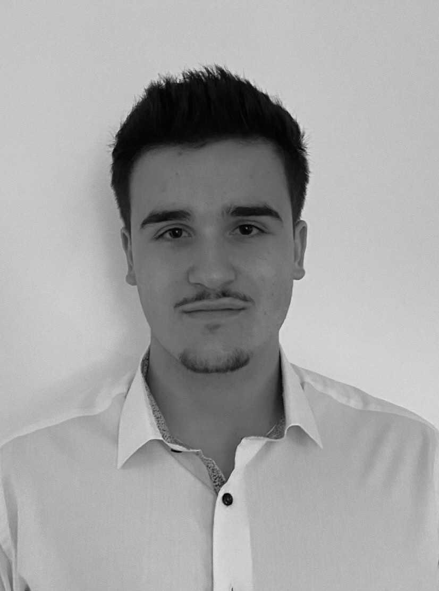

Salut, je suis Lucas !
Triple natioalité Français/ Anglais/ Panaméen - Né le 03/02/2005
Contact : +33 6 58 12 84 01 - lucas.duquesne@me.com - LinkedIn : Lucas Duquesnes
Adresse : 30, allée du Bosquet - 59710 - Mérignies - FRANCE
EDUCATION
- 2009/2014 : Ecole primaire/maternelle Lycée Francais de Saint-Domingue en République Dominicaine
- 2014/2016 : Ecole primaire Longchamp - Paris - France
- 2016/2018 : Collège Lycée Janson de Sailly - Paris - France
- 2018/2020 : Collège Notre Dame de la Providence - Orchies - France
- 2020/2022 : 2nd et 1re Institut de Genech - Genech - France
- Section Internationale et Européenne Anglaise
- Double diplome Américain (Academia Dual diplomeTM)
- 2022/2023 : Terminale Institut de Genech - Genech - France
- Section Européenne Anglaise
- Double diplome Américain (Academia Dual diplomeTM)
- 2023/2028 : Première année à l'IESEG - Lille- France
- Parcours grande école
EXPERIENCES
- 2019 : Stage dans un Cabinet d'Avocat Maitre Rodolphe HUBER, spécialisé en droit commercial, des sociétés et droit du travail
- 2020/2023 : Participation aux MUN EDHEC - Milan et Istanbul. Attribution du certificat de Meilleur Délégué du MUN d'Istanbul
- 2021 - Actuel : Cours particuliers et de soutien en Anglais conversationnel Niveau Lycée
- 2021 - 2023 : Serveur Polyvalent en "Extra" et responsable évènement Restaurant L'Engrenage - Golf de Mérignies
DIVERS
- Bilingue Français/Anglais et courant en Espagnol
- Délégué du niveau Terminal de mon lycée
- Participation à diverses collectes de la Banque Alimentaire. 12 000 euros collectés soit environ 3000 repas distribués dans ma région
- Pratique du Golf Ecole de Golf de Mérignies
- Salle de sport/ Musculation
- Pratique du piano et de la guitare